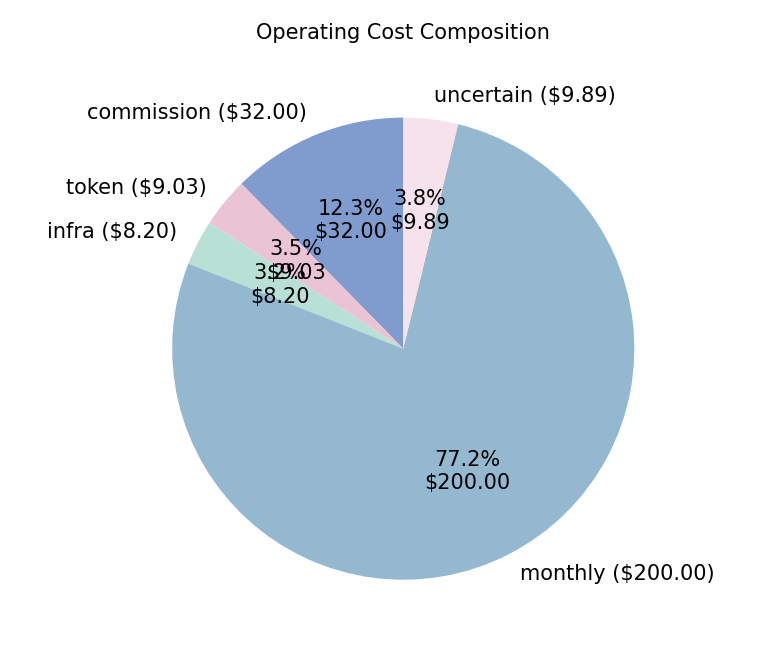
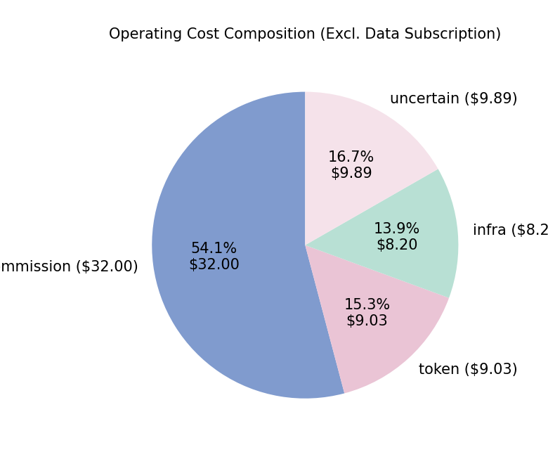

Trading Period: 2025-12-01 - 2026-1-30
Trading Model / Strategy: gpt-5.2-100000
Assets: AAPL, AMZN, AVGO, GOOG, GOOGL, META, MSFT, NVDA, TSLA
Initial Cash: 100000.00
Current Cash: 163.77
Positions: - AAPL: 39 - AMZN: 43 - AVGO: 34 - GOOG: 31 - GOOGL: 46 - META: 17 - MSFT: 23 - NVDA: 75 - TSLA: 14
Total Position Value: 100341.99
Total Portfolio Value: 100505.76
Return / Profit: 505.76

Benchmark Symbol: SPY Benchmark Available: True Benchmark Return: 1.72%
v0 (Initial Cash): 100000.00
v_market (Benchmark Final Value): 101719.91
v_static (Initial Holdings Buy&Hold Final Value): 100410.11
v_end (Strategy Final Value): 100505.76
Market Effect: 1719.91
Asset Selection Effect: -1309.80
Timing Effect: 95.65
Total Profit: 505.76
Initial Holdings (first build day, post-trade): AAPL:35, AMZN:46, AVGO:25, GOOG:31, GOOGL:32, META:15, MSFT:24, NVDA:66, TSLA:13
Two attribution views: full initial cash tracks the whole portfolio against the benchmark; invested-only removes idle cash after the first build day when applying market moves.
Benchmark: SPY | Mode: full_cash | Benchmark return: 1.72%
| Line item | Amount (USD) |
|---|---|
| Initial capital (v₀) | 100,000.00 |
| Benchmark portfolio at end (v_market) | 101,719.91 |
| Buy & hold portfolio at end (v_static) | 100,410.11 |
| Strategy portfolio at end (v_end) | 100,505.76 |
| Profit attribution | |
| Market effect | 1,719.91 |
| Asset selection effect | -1,309.80 |
| Timing effect | 95.65 |
| Total profit (gross) | 505.76 |
| Invested cash (excl. idle cash after day 1) | 89,295.51 |
| Cash after first build day | 10,704.49 |
Benchmark: SPY | Mode: invested_only | Benchmark return: 1.72%
| Line item | Amount (USD) |
|---|---|
| Initial capital (v₀) | 100,000.00 |
| Benchmark portfolio at end (v_market) | 101,535.80 |
| Buy & hold portfolio at end (v_static) | 100,410.11 |
| Strategy portfolio at end (v_end) | 100,505.76 |
| Profit attribution | |
| Market effect | 1,535.80 |
| Asset selection effect | -1,125.69 |
| Timing effect | 95.65 |
| Total profit (gross) | 505.76 |
| Invested cash (excl. idle cash after day 1) | 89,295.51 |
| Cash after first build day | 10,704.49 |
| Line item | Amount (USD) |
|---|---|
| Portfolio level | |
| Gross profit (v_end − v₀) | 505.76 |
| Static cost (data subscription) | -200.00 |
| Dynamic cost (commission + token + infra + uncertain) | -59.12 |
| Total operating cost | -259.12 |
| Net economic outcome (gross − total cost) | 246.64 |
| Execution / timing layer | |
| Timing effect (vs initial buy&hold) | 95.65 |
| Dynamic cost (same as above) | -59.12 |
| Net timing outcome (timing − dynamic cost) | 36.53 |
Daily actions and line-item costs: gpt-5.2-100000-daily-action.txt.
| Cost bucket | Amount (USD) |
|---|---|
| Static (data subscription) | 200.00 |
| Dynamic (commission + token + infra + uncertain) | 59.12 |
| Total | 259.12 |




Opportunity Cost (Decision Price - Execution Price) 460.98
Average Latency per Trade 23495.44 ms
Average Daily LLM Latency 67870.78 ms
Average Daily Input Tokens 91323.76
Average Daily Output Tokens 3072.05
Daily actions and detailed cost lines: see gpt-5.2-100000-daily-action.txt.
Uses profit-breakdown total profit (v_end − v₀), i.e. market + selection + timing.
| Line item | Amount (USD) |
|---|---|
| Gross profit (attribution total) | 505.76 |
| Return / profit (portfolio replay) | 505.76 |
| Static cost | -200.00 |
| Dynamic cost | -59.12 |
| Total cost | -259.12 |
| Net outcome (gross − total cost) | 246.64 |
Isolates timing (actual strategy vs buy&hold) against costs that scale with trading/decisions.
| Line item | Amount (USD) |
|---|---|
| Market effect (context) | 1,719.91 |
| Asset selection effect (context) | -1,309.80 |
| Timing effect | 95.65 |
| Dynamic cost | -59.12 |
| Net timing outcome (timing − dynamic cost) | 36.53 |